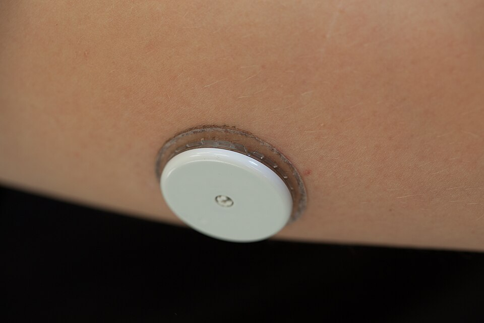

Why Is My Blood Sugar So Unpredictable After Pancreatitis?
By Leon Wilkinson, Type 3c patient and developer of GlycoTrace · Updated June 2026

Photo: Thirunavukkarasye-Raveendran / Wikimedia Commons, CC BY 4.0
{kind=link}
Quick answer
Pancreatitis damages the cells that produce both insulin and glucagon. Insulin controls high blood sugar; glucagon rescues you from low blood sugar. When both are impaired, readings swing faster and further than in Type 1 or Type 2. On top of this, exocrine pancreatic insufficiency makes digestion variable, so the same meal produces different glucose curves depending on how well your enzymes worked that day. This is not a failure of willpower or effort. It is the biology of Type 3c diabetes.
The two-hormone problem nobody explains
Most people understand that diabetes involves insulin. What fewer people are told about Type 3c is the glucagon problem.
In a healthy body, blood sugar is regulated by two opposing hormones both produced in the pancreas. Beta cells make insulin, which lowers blood sugar after meals. Alpha cells make glucagon, which raises blood sugar when it drops too low. The two work together like a thermostat: one heats, one cools.
Pancreatitis does not selectively damage only the beta cells. The inflammation, scarring, and pressure damage the whole organ. Alpha cells are injured too. Sometimes severely.
The result is that when blood sugar falls, the glucagon response is blunted or absent. The liver does not get the signal to release stored glucose. The natural self-correction that Type 2 patients have, and even many Type 1 patients retain to some degree, is impaired. A blood sugar that would ordinarily stabilise itself instead keeps falling.
I learned this the hard way. In my first year after diagnosis, I had several hypos that came on much faster than I was warned to expect. I had calculated my insulin carefully. I had eaten what I thought was enough. But I had no idea my glucagon response was compromised, because nobody had told me. Once I understood this, the unpredictability stopped feeling random and started feeling explainable.
How digestion makes it worse
The second complicating factor is the exocrine side of the pancreas. Most people with Type 3c diabetes also have exocrine pancreatic insufficiency (EPI): the pancreas is not producing enough digestive enzymes to break down food properly.
This matters for blood sugar because digestion speed determines glucose absorption speed. When food is digested efficiently, carbohydrates are broken down and absorbed relatively quickly. When digestion is incomplete, absorption is slower, spread out over a longer period, and less predictable.
PERT (pancreatic enzyme replacement therapy, most commonly Creon) compensates for this. But PERT dose and timing are not exact sciences. The same meal with a slightly different fat content, or taken at a slightly different time relative to your Creon dose, can produce meaningfully different glucose curves. This is why post-meal readings in Type 3c can confuse even experienced diabetes nurses who are used to Type 1 or Type 2 patterns.
Three variables affecting every post-meal glucose reading
🍽️
The meal
Carbs, fat content, portion size, fibre
💊
PERT timing
Dose, timing relative to first bite, fat in meal
💉
Insulin
Dose, timing, injection site, basal level
All three interact. Changing one changes what the other two do.
What unpredictability actually looks like
If you recognise any of the following, you are not alone and you are not doing anything wrong:
- The same breakfast at the same time produces different readings on different days
- Hypos happen faster and with less warning than you were told to expect
- Post-meal readings peak later than expected, sometimes two or three hours after eating rather than one
- Overnight glucose is harder to stabilise even when you have not changed anything
- Exercise drops your glucose more sharply than it used to or more than guidelines suggest
- You can be at 7 mmol/L and dropping fast enough to be at 3 within 30 minutes
These are all consistent with compromised glucagon response combined with variable digestion. They are features of Type 3c biology, not failures of your management.
Why standard advice often does not fit
A lot of diabetes self-management education is designed for Type 1 or Type 2. The carbohydrate-to-insulin ratios, the meal timing guidance, the hypo treatment protocols: all of it assumes a glucagon response that works, and digestion that is reasonably predictable.
When this advice does not seem to work for you, it is tempting to assume you are doing something wrong. In many cases, you are not. The advice was not written for your situation.
Some things that genuinely help in Type 3c:
- Smaller, more frequent meals to reduce the size of any single glucose spike
- Lower-fat meals where possible to reduce digestion variability and PERT unpredictability
- Taking PERT with the first bite and splitting doses for large or high-fat meals
- Checking glucose more frequently around meals until you understand your personal patterns
- Using a CGM to see the trend, not just the current number
- Keeping fast-acting glucose close at all times, including overnight
- Logging meals, PERT, and insulin together so you can identify what is driving variability over time
The value of pattern data
Managing Type 3c without data is like navigating without a map. You can make reasonable decisions based on how you feel, but you will miss patterns that only become visible across many readings over days and weeks.
A CGM helps enormously with this because it gives you continuous data rather than snapshots. But the glucose curve alone only tells you part of the story. To understand why your glucose did what it did, you need to know what you ate, when you took your Creon, how much insulin you gave, and whether you exercised. When all of that is in one place alongside your readings, patterns start to emerge.
This is why I built GlycoTrace. After my diagnosis, I kept a paper diary for a while, then tried several apps, and none of them let me log PERT alongside my meals and glucose. GlycoTrace does. It is free, works on Android, and connects to FreeStyle Libre so CGM readings come in automatically.
See the patterns behind your unpredictable readings
Log glucose, insulin, meals, and PERT together. Free on Android.
When to raise this with your team
Glucose variability in Type 3c is genuinely harder to manage than in other types, but that does not mean it cannot be improved. If your readings feel out of control, these are worth discussing with your diabetes team:
- Is my PERT dose correct? Many people are underdosed. There is no universal formula; the right dose depends on your fat intake per meal. A dietitian with pancreatic experience can help calibrate this.
- Has my glucagon response been assessed? A glucagon stimulation test or mixed meal tolerance test can establish how much alpha cell function remains.
- Should I be on a CGM? NICE now recommends CGM for Type 1; some T3c patients qualify under the same criteria depending on their history of hypoglycaemia.
- Is my basal insulin dose right? Overnight variability in particular often points to basal dose needing adjustment.
- Have I seen a dietitian specialising in pancreatic conditions? General diabetes dietary advice is not always appropriate for Type 3c.
Common questions
Why is blood sugar hard to control after pancreatitis? +
Pancreatitis damages the beta cells that produce insulin and the alpha cells that produce glucagon. Without glucagon, the body cannot self-correct when glucose drops. Add variable digestion from EPI and the interaction with PERT dosing, and you have a system with more moving parts than standard Type 1 or Type 2 management is designed for.
Does PERT affect blood sugar after meals? +
Yes. PERT (Creon) determines how quickly food is digested and absorbed. Too little PERT means slower, more spread-out absorption and a flatter, later glucose peak. The right dose means faster, more complete absorption. The same meal and the same insulin dose can produce very different glucose curves depending on whether your PERT was effective.
Why do I get hypos even when I have been careful with insulin? +
In Type 3c, the glucagon-based safety net that normally prevents hypos from becoming severe is impaired. A small insulin miscalculation or a meal that was absorbed faster than expected can trigger a hypo that the body cannot self-correct. This is not a dosing error; it is the underlying biology of pancreatogenic diabetes.
Will blood sugar settle down over time after pancreatitis? +
It can improve as you build up experience with your personal patterns, optimise your PERT dose, and refine your insulin timing. However, Type 3c is a progressive condition in many cases, meaning the underlying pancreatic function may decline over time. Regular review with your diabetes team is important to adjust treatment as your needs change.
Is a CGM worth it for Type 3c diabetes? +
Yes, particularly for Type 3c because of the speed at which glucose can change and the impaired glucagon response. A CGM gives you trend data and alerts for falling glucose before it reaches a dangerous level. Some Type 3c patients qualify for NHS-funded CGM if they meet the criteria for recurrent or severe hypoglycaemia. Ask your diabetes team.
Related reading
- Best app for Type 3c diabetes: what actually works in 2026
- Am I Type 3c or Type 2? How to tell the difference
- GLP-1 drugs and Type 3c diabetes: should you take Ozempic?
- CGM for Type 3c diabetes: what the research says
Understand what is driving your glucose variability
Log meals, PERT, insulin, and CGM readings together. Free on Android.
Download GlycoTrace free